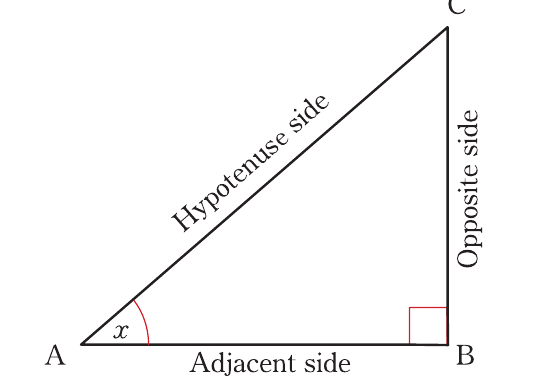

Trigonometry
Consider the right-angled triangle ABC shown in Figure 8.1.

From ∆ABC, in Figure 8.1, CÂB = x, AC is the length of the hypotenuse side, with respect to angle x, AB is the length of adjacent side, and BC is the length of opposite side.
Consider similar right-angled triangles shown in Figure 8.2.
From Figure 8.2, since the triangles are similar, it follows that
where t is a constant ratio. This constant ratio is called the tangent of the angle at the vertex A and is written in short as tanA.
where s is a constant ratio. This constant ratio is called the sine of the angle at the vertex A and is written in short as sinA.
where c is a constant ratio. This constant ratio is called the cosine of the angle at vertex A and is written in short as cosA.
From Figure 8.2, it can be deduced that, the lengths of the sides of a right-angled triangle are used to define the trigonometric ratios as follows:
The following mnemonic is a useful way of remembering these definitions.
| SO | TO | CA |
| H | A | H |
Using the mnemonic, it follows that,